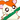
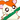
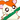

| 2012/03 16 Fri | ひめたん(* ゝω・*)ノ その104 |
そいえばふと思ったんよ。
最近のブログ、写真全然ないじゃんっ!!
ということで左胸のユニフォームどーん♪♪

ユニフォームて何か新鮮だよねっ
ステップしながら左胸の「46」をおさえがら歌うのっ∪・ω・∪
伝わるかしら...?
ユニフォーム着たし
サッカーの質問ばばばばばっ
 ひめたんは、地元のサンフレッチェ広島についてどれくらい知ってるの?(・ω・)
ひめたんは、地元のサンフレッチェ広島についてどれくらい知ってるの?(・ω・)
広島のサッカー代表、チームカラーは紫、それから...。
(・ω・)
好きなサッカー選手いる?
ひめたんのおじさんのお店によくサンフレの選手が来るそうです。
牧野選手とか(^ω^)!
何だか勝手に親近感ーですね♪
サッカーで応援してるチームとかある?
広島県民としてはやっぱりサンフレに頑張ってもらいたいですねー。
チームカラーは乃木坂と一緒だしね(^^)?
でも頑張ってるチームはみんな応援するっ!
 サッカー好きなの?野球を嫌いにならないでおくれよ('Д`)
サッカー好きなの?野球を嫌いにならないでおくれよ('Д`)
ひめたんスポーツするのは苦手じゃけど、試合観戦は好きよお(*^^*)
もちろん野球も観るの好きすきっ!
ひめたんはサッカーに興味はある?
一緒にサッカーしよ?って誘われたら考える('ω`)
一緒にサッカー応援しよ?って誘われたら喜んでっ!てなる。
キーパーってどう思いますか?
キーパーめっちゃ大事じゃあないですか(`・ω・')!
チームの守護神的なーっ♪
ボールにくらいついてんのかっこいいですよね★?
こっからいつもの。
 ワカツキのブログに「ブラックひめたん」という単語出てきたけど
ワカツキのブログに「ブラックひめたん」という単語出てきたけど
ひめたんはブラックなんかじゃないよね!!
ブラックなんかじゃないよー!
ただ「お菓子食べたい...」って
みゅみゅ
(若月佑美chan)が言ったから
「食べちゃえ
 食べちゃえー
」って答えただけで...
食べちゃえー
」って答えただけで...
食べちゃえー
」って答えただけで...
え?くろい?
そんなことないってば☆
('・ω・`)わら
 絶対ひめたん僕のこと忘れてしまったよね?忘れちゃった?絶対忘れとるぅ(T_T)
絶対ひめたん僕のこと忘れてしまったよね?忘れちゃった?絶対忘れとるぅ(T_T)
思い出してくれたら『ひめたん単推し』になろう(^-^)
思い出すも何も、忘れてないってゆーね(`・ω・)どやあ!
なのでひめたん単推し決定よー♪約束よー!
 次ひめたんに会う時は、コーデにピンク色いれちゃおうかな?
次ひめたんに会う時は、コーデにピンク色いれちゃおうかな?
わーい＼(ω)／!
ぜひピンク着てきてくださいよお♪
ピンク着ると女の子はもーっと女の子らしさが出て可愛いし、
男の子はオシャレさんかしらってなりますよね?
ステキだと思う(^ω^)♪
ひめたんが好きなピンクは、ちょこっとピンクですか?
それとも、がっつり生地からピンクですか?
はっきりした
ピンク
ならちょこっと、
ふんわりした
ピンク
ならがっつり着たりもしますかな(∀)♪
卵焼きは甘い派しょっぱい派?笑っ
あーお弁当食べてるとよくその話題になるー♪
ひめたん家はめっちゃ甘くしますよ!
ガムシロップって、冷たい紅茶とかに入れる甘いシロップ入れるの(*^^*)
みなさんやってみるしかー!!
 心肺蘇生法って知ってますか?
心肺蘇生法って知ってますか?
人工呼吸とかしょー?
心臓マッサージとかしょー(ω)?
言葉は知ってるっ★わら
 自分を動物に例えると?
自分を動物に例えると?
はむすたー
 


はむすたーみたいな顔してるっていろんな人に言われるっ。
あーひめたんね、2匹ほどはむすたー飼ったことあるよ♪
ちっちゃい頃はハム太郎好きだったしねー(^^)/
 握手会いけないけどファン失格ですか?
握手会いけないけどファン失格ですか?
何を言いますかっ(;'∩`)!
遠くから応援してくださって、ブログ読んでくださるなんて
立派なファンさんですよ!!!
いつもありがとうございます☆
こちらこそ会いに行けなくてごめんね('・・`)
ひめたん(*´・ω・*)
コメント(116)
2012/03/16 20:12